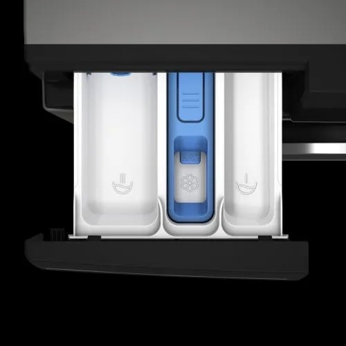

اريستون غساله ملابس 8 كجم 1400 لفة فالدقيقة انفرتر WFST8GWHR

كاش
20,499 جنيه
السعر محدّث النهاردة · السعر في الفرع هو الأساس
تحليل سريع
أرقام محسوبة من المعروض عندنا
سعره مقارنة بالمقاس ده
رابع أرخص
من بين 11 منتج بنفس المقاس عندنا
الضمان
5 سنة
ضمان الوكيل
سعره بين 11 منتج بنفس المقاس عندنا
20,499
الأرخص 16,004الأغلى 54,914
يناسب مين؟
إرشادات عامة تساعدك تقرر بنفسك
غسالة 8 كيلو مناسبة للغسيل اليومي لأسرة من 3 لـ 5 أفراد تقريبًا.
6 - 7 كيلوشخص أو اتنين
8 - 9 كيلوأسرة 3 لـ 5
10 كيلو فأكثرأسرة كبيرة
الكيلو هنا وزن الغسيل الجاف، مش سعة الحلة.
مقارنة بأقرب المنتجات
أقرب ٣ منتجات من نفس النوع والمقاس عندنا
| ده أريستونWEST8GWHR | سامسونجWWBOT4020CX1ASافتح › | إل جيF4Y2TYGYPافتح › | تورنيدوTWV-FN812BKOAافتح › | |
|---|---|---|---|---|
| سعر الكاش | 20,499 | 19,499 | 21,889 | 18,526 |
| سعر التقسيط | — | 20,999 | 23,499 | — |
| المقاس (كيلو) | 8 | 8 | 8 | 8 |
| سرعة العصر | 1,400 لفة | — | — | 1,200 لفة |
| الضمان (سنة) | 5 | — | 10 | — |
| فرق الكاش | — | 1,500 | 1,610 | — |
✓ = الأفضل في السطر ده · دوس على اسم أي منتج تشوف صفحته
اعرف قبل ما تختار
المصطلحات اللي على الكارت، بالعربي
سرعة العصر (اللفة) تفرق؟كل ما زادت اللفة، الغسيل بيطلع أنشف وبيجف أسرع. 1000 لفة كفاية، و1400 أحسن للبطاطين والتقيل.
البخار بيعمل إيه؟بيساعد في إزالة البقع والحساسية من غير نقع، وبيقلل الكرمشة.
الفرق بين فتحة أمامية وعلوية؟الأمامية بتوفر مياه وكهربا وبتتحط تحت الرخامة. العلوية أسهل في التحميل ومش محتاجة تنحني.
أسئلة عن المنتج ده
الضمان كام؟5 أعوام ضمان الوكيل
بتنشف؟لأ، غسالة بس من غير مجفف
باختصار
المقاس 8 كيلوسرعة العصر: 1,400 لفةاللون: فضىنوع الفتحة: فتحة أماميةضمان 5 أعوام
شاشة LCD موتور انفرتر نوع التحميل: أمامي عدد اللفات: 1400 لفة في الدقيقة عدد البرامج: 15 الأبعاد: 85 × 60 × 54.6 سم بلد المنشأ: تركيا
المواصفات الكاملة
الحجم
8 كيلو
اللون
فضى
الضمان
5 أعوام
عدد الدورات في الدقيقة
1400
سخان داخلي
نعم
طلمبة
نعم
مجفف
لا
شاشة ديجيتال
نعم
نوع الفتحة
فتحة أمامية
الأسعار شاملة الضريبة · التوصيل والتركيب مجانًا داخل القاهرة
آخر تحديث للأسعار 2026-09-26
آخر تحديث للأسعار 2026-09-26